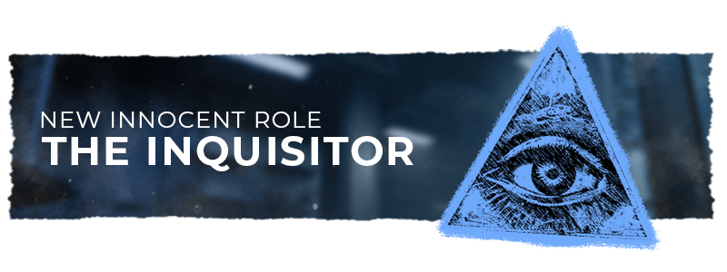
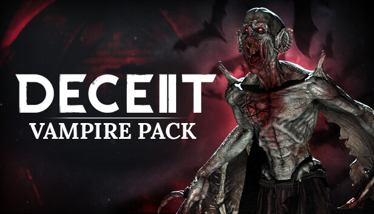

Deceit 2
I spent 2 months working with World Makers on Deceit 2 just as it was launching to consoles and going free to play. I was given a company laptop with a build of the game so I was able to look at some code as well as test my own features, I used this to look for bugs which I was able to add to our tracker with an importance level and I liked how we set things out so I used this going into my final years group project.

I would attend meetings for how we wanted to balance the game. As someone who played the game a lot and spoke with the community, I would be a good voice for the competitive guidence. The first main World Makers thing I contributed to was changes to the Inquisitor role as a lot of players didn't find much use in the roles ability. The team talked to me about what they wanted the identity of this ability to be, so keeping with in these ideals, I suggested ways to make the investigative part more intertesting to players without making it too strong. At first we wanted to have it have an ability useful in the day and night, but after some testing we thought this to be too much for the kit, and decided to split it into two roles, with its night power going to a new role the "Seer". Meaning players got both a rework and new role enhancing their experience.

When looking at the next DLC, I was part the team looking at, and testing the new terror the "Vampire". This terror was an addition from the first game, meaning the team wanted it to feel fimilar to the oringal without just being a copy. We changed the teleport ability from the first game to be more applicable to the gameplay of the sequal then gave it an additional power which would help the terror track targets. This terror stood out due to being the only one to not have the ability to go through portals and would be able to use their teleport to go through wall cracks as opposed to breaking them, allowing for new strategies.

With two new maps the team wanted each map to have a unique inpection machince which would go through a few different iterations for the Vats (Image above) we made it so when 2 players entered from the second day onwards it would scan them and show all players green (players are in the same faction) or red (opposing factions). To help new mechanics we added a glossary, I was given a list of objects we wanted to talk about in it and was tasked to get a photo to go along side the topic meaning players could see and name and know what to look for in game. For the second inpection mechanic it was a confession booth to go with the church theme of that map, it went thought a few tests with the games moderators to see if they'd be able to work out how it works without a description first off to see if it's obvious enough. There ended up being some confusion to what the options did for each player so they were simiflied to be confess (trust, showing them your role) or condem (distrust, killing the other player) making it useful but risky for players to use, allowing for funny moments in game too.
I learnt a lot with my time at World Makers and I put a lot of these skills towards leading my team for the Bound in Time project.